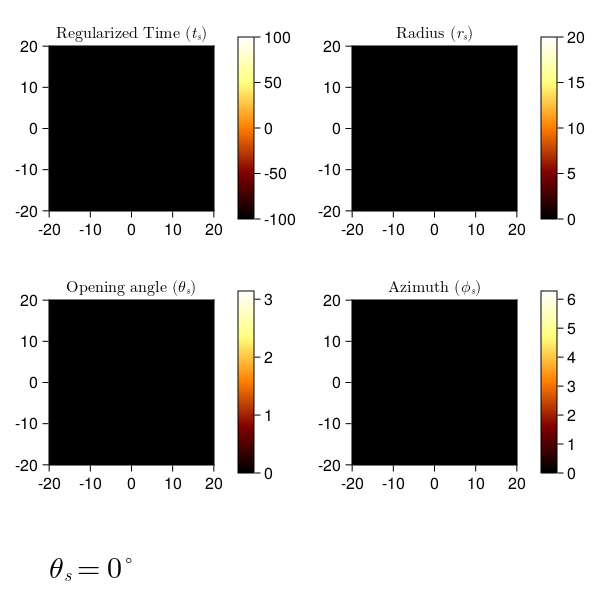

Rays parameterized with Mino time
In this example, we will raytrace the region around a Kerr blackhole as seen by an observer stationed at infinity. We will show the emission coordinates of the n=0 (direct) and n=1 (indirect) photons as they are emitted from the source, at a fixed inclination angle from the blackhole's spin axis.
First, let's import Krang and CairoMakie for plotting.
using CairoMakie
using KrangWe will use a 0.99 spin Kerr blackhole viewed by an assymptotic observer at an inclination angle of θo=π/4. A region spanned by radii between the horizon and 20M at varying inclinations will be raytraced onto the 20Mx20M screen of the observer.
metric = Krang.Kerr(0.99);
θo = 85 * π / 180;
sze = 50;
rmin = Krang.horizon(metric)
rmax = 10;
ρmax = 10;
n = 0
camera = Krang.SlowLightIntensityIntensityCamera(metric, θo, -ρmax, ρmax, -ρmax, ρmax, sze);
curr_theme = Theme(
fontsize=20,
Axis=(
xticksvisible=false,
xticklabelsvisible=false,
yticksvisible=false,
yticklabelsvisible=false,
leftspinevisible=false,
rightspinevisible=false,
topspinevisible=false,
bottomspinevisible=false,
titlefontsize=30,
),
)
set_theme!(curr_theme)Let us now create a figure to plot the emission coordinates on,
fig = Figure(resolution=(500, 600));┌ Warning: Found `resolution` in the theme when creating a `Scene`. The `resolution` keyword for `Scene`s and `Figure`s has been deprecated. Use `Figure(; size = ...` or `Scene(; size = ...)` instead, which better reflects that this is a unitless size and not a pixel resolution. The key could also come from `set_theme!` calls or related theming functions.
└ @ Makie ~/.julia/packages/Makie/Qvk4f/src/scenes.jl:220and use this figure make an animation by looping over the inclination angle θs. This loop will plot the emission coordinates for each θs.
recording = record(fig, "raytrace.gif", range(0.1, 3, length=290), framerate=15) do τ
empty!(fig)
time, radius, inclination, azimuth = [size(camera.screen.pixels) |> zeros for i in 1:4]
Threads.@threads for I in CartesianIndices(time)
#coordinates = Krang.emission_coordinates(camera.screen.pixels[I], θs, true, n)
coordinates = Krang.raytrace(camera.screen.pixels[I], τ)
if !any(isnan.(coordinates[1:4])) && coordinates[2] < rmax
time[I], radius[I], inclination[I], azimuth[I] = coordinates
end
end
data = (time, radius, inclination, azimuth)
titles = (L"\text{Regularized Time }(t_s)", L"\text{Radius }(r_s)", L"\text{Inclination }(\theta_s)", L"\text{Azimuth } (\phi_s)")
colormaps = (:afmhot, :afmhot, :afmhot, :hsv)
colorrange = ((-20, 20), (0, rmax), (0,π), (0, 2π))
indices = ((1,1), ())
for i in 1:4
hm = heatmap!(
Axis(getindex(fig, (i > 2 ? 2 : 1), (iszero(i%2) ? 3 : 1)); aspect=1, title=titles[i]),
data[i],
colormap=colormaps[i],
colorrange=colorrange[i]
)
cb = Colorbar(fig[(i > 2 ? 2 : 1), (iszero(i%2) ? 3 : 1)+1], hm; ticklabelfont="Computer Modern", labelsize=30, ticklabelsize=20)
end
ax = Axis(fig[3, 1:3], height=60)
hidedecorations!(ax)
CairoMakie.text!(ax,0,100; text=L"θ_o=%$(Int(floor(θo*180/π)))^\circ")
rowgap!(fig.layout, 1, Fixed(0))
#rowsize!(fig.layout, 1, Auto(0))
#display(fig);
end"raytrace.gif"
This page was generated using Literate.jl.